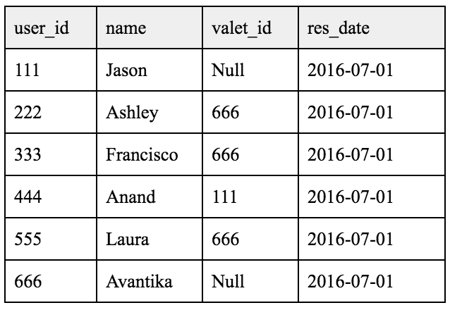

SQL
Sample Queries:With the help of SQL, database queries can be created to discover useful information regarding valuable company metrics.
Hypothetical: The below information has been retrieved from a valet parking application, Duxe Valet. Duxe experienced an increased number of customer complaints on July 1, 2016. To respond to the customer complaints, Duxe would like to know which valet was assigned to each customer reservation. They would also like to know how many reservations each valet completed.
To begin, we will need to see what type of information is available in the database by reviewing the table.
SELECT * FROM table;
1. What are the names of each valet was assigned to each customer?
SELECT customer.name AS customer_name, valet.name AS valet_name
FROM table AS customer
JOIN table AS valet
ON customer.valet_id = valet.user_id
WHERE customer.valet_id > 0;
2. How many customers did each valet serve on July 1, 2016?
SELECT valet.name AS valet_name, COUNT (customer.User_ID) AS reservations_completed, res_date
FROM table AS customer
WHERE customer.user_id>0, customer.res_date >= '2016-07-01' AND customer.res_date < '2016-07-02'
JOIN table AS valet
ON customer.valet_id = valet.user_id
GROUP BY reservations_completed, valet_name
Technical Projects & Software
Customer Issue Tracking System with JIRA: Work directly with CTO and Engineering team at Luxe to create a systematic workflow in JIRA to track customer issues. Integrate JIRA with company CRM, Desk.com for Salesforce.
Custom CRM with Desk.com for Salesforce: Track and manage all customer inquiries at Luxe through Desk. Create rules to manage inbox and productivity. Run reports to track efficiency metrics. Create labels to log and report customer issues.
Snake Game with Ruby on Rails: Introduction to Ruby on Rails. Run programs from computer's command line to develop a Rails application. Use Sublime Text and terminal to learn about programming in Ruby. Create web application, Snake.
Personal Website & Luxe Company Knowledge Base with HTML & CSS: Use Sublime Text and Terminal to implement HTML and CSS. Create, design, maintain my personal website and Luxe company knowledge base.
Client Profiles with LawLogics: Track all client correspondences and document all updates to each client case. Calendar events, set reminders, and run reports to manage case list and meet deadlines.
Other Apps: Advanced skills in Outlook and Microsoft Suite, Google Apps, and iPhone and Android apps.
Groups
Meetup: Product Management, Products That Count, Lean Startup Product, Customer Succcess.
Bridge Troll: Ruby on Rails, HTML, CSS.
Courses
Coursera: University of Alberta: Client Needs and Software Requirements, Introduction to Software Product Management, Software Processes and Agile Practices, Agile Planning for Software Products.
Udemy: The Complete SQL Bootcamp